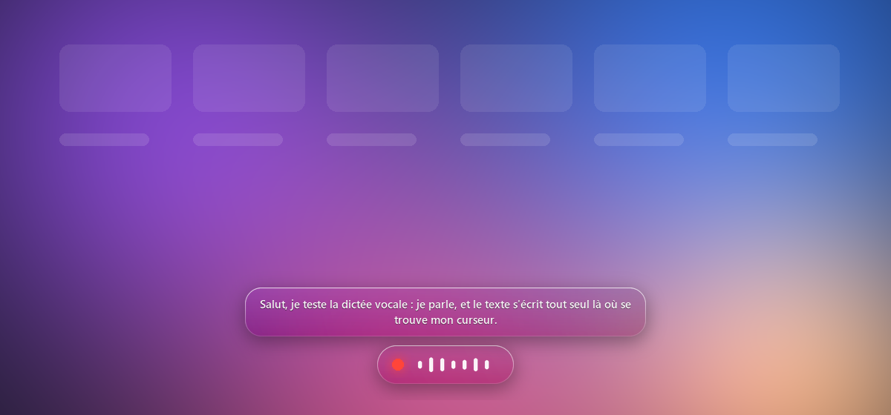

Parle.
Ça s'écrit.
Maintiens Ctrl + Espace et dicte dans n'importe quel logiciel. Tout se passe sur ton PC.

Installation
Windows 10 ou 11. Trois minutes.
-
Python
Installe-le depuis python.org en cochant « Add python.exe to PATH ».
-
Dictée
Télécharge le ZIP et décompresse-le où tu veux.
-
C'est prêt
Double-clique sur
installer.bat. L'icône apparaît près de l'horloge.